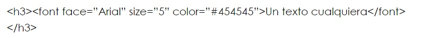
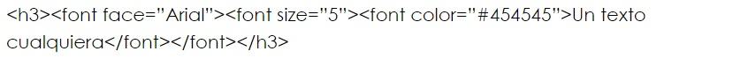
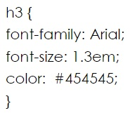

¿Qué es CSS?
Si quieres saber un poco más sobre fundamentos de la web, cómo están hechas las páginas
web, conoceremos
un poco más sobre CSS, el lenguaje que nos permite dar estilos a nuestra página web.Las hojas de
estilo
constan de una serie de instrucciones que definen cómo se han de representar determinados elementos
de página con etiquetas HTML.
ESTRUCTURA DE LAS INSTRUCCIONES DE ESTILO
Toda instrucción de estilo consta de dos partes:
El selector (el elemento que se ha de modificar)
La declaración, siempre va entre llaves y consta, a su vez, de dos partes:
La propiedad (por ejemplo, color)
El valor correspondiente a la misma.

Separando la estructura del estilo
Veamos un pequeño ejemplo de la elegancia y efectividad de CSS. Hasta ahora había que asignar
indicaciones sobre la fuente mediante atributos HTML, por ejemplo así:

incluso hay editores que hacen lo siguiente con esa instrucción:

Como si no fuera bastante, la instrucción se tenía que repetir x veces para que incluyera
todas las líneas de texto. En el futuro ya no tendrá que utilizar la etiqueta .
En su lugar, bastará con asignar el formato base mediante CSS.

Frameworks CSS
Los frameworks se utilizan en el ámbito de la programación de aplicaciones desde hace décadas. Recientemente han comenzado a utilizarse para programar y diseñar aplicaciones web, por lo que ya existen decenas de frameworks para CSS framework es un conjunto de herramientas, librerías, convenciones y buenas prácticas que pretenden encapsular las tareas repetitivas en módulos genéricos fácilmente reutilizables, tambien es un conjunto de herramientas, hojas de estilos y buenas prácticas que permiten al diseñador web olvidarse de las tareas repetitivas para centrarse en los elementos únicos de cada diseño en los que puede aportar valor.